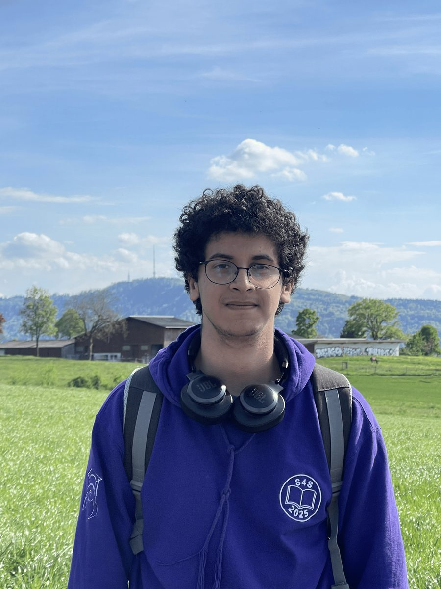

ETH Zürich MSc in Computer Science
2026 – presentMajor in Machine Intelligence, minor in Theoretical Computer Science.
MSc student in Computer Science at ETH Zürich
My research interests are machine learning, probabilistic models, optimization, and computer systems. I am currently a research intern at the DCL Lab at EPFL, working on interactive consistency under a dishonest majority. I did my bachelor's at EPFL, where I also led a student association and built the systems that student events run on.

Major in Machine Intelligence, minor in Theoretical Computer Science.
Average 5.1/6.
A Rust implementation of a protocol in which an elected leader broadcasts one verifiable vector instead of running n parallel Byzantine broadcasts, built to measure it against those baselines.
Benchmarked NUMA allocators against jemalloc, tcmalloc, mimalloc, glibc, and others, and explored allocation strategies to reduce latency across the CXL interconnect. The report covers four bugs fixed in NUMAlloc, the replication of its paper's main comparison, and the design of a CXL-aware allocator.
The design, implementation and evaluation of an overlay network in which every packet of a contestant machine is checked on machines the organizers control.
Student assistant for the first-year object-oriented programming course in Computer Science. Taught Java, object-oriented design and core data structures in exercise sessions, and supported students on ReCHor, the semester-long course project.
App used by 1,000+ new students each year during the S4S integration week at EPFL.
Built in a team for EPFL's Software Enterprise course (CS‑311): an event-ticketing app in Kotlin connected to a Firebase database. We presented it to a jury of real CEOs in the course's final contest and placed 4th, in a course of 200+ students.
Led Students 4 Students (S4S), the student association that runs EPFL's integration week for 1,000+ incoming first-year students, with classes and workshops held before the semester starts. Managed a core organizing team of 20 and coordinated 100+ volunteer staff to deliver the event.
Head of IT of Students 4 Students. Developed S4S‑Connect, the web app the participants use during the integration week.
Built and maintained the distributed virtual network used for HC2 and Prologin, each hosting 300+ participants at EPFL.
Class Representative for third-year Computer Science bachelor students at EPFL.
Representative of the students of the School of Computer and Communication Sciences (IC) at EPFL within the IC Council.
Contributed to Trust, a rewrite of truffe2.agepoly.ch, the platform campus associations use to borrow equipment, book rooms, and manage accreditations.